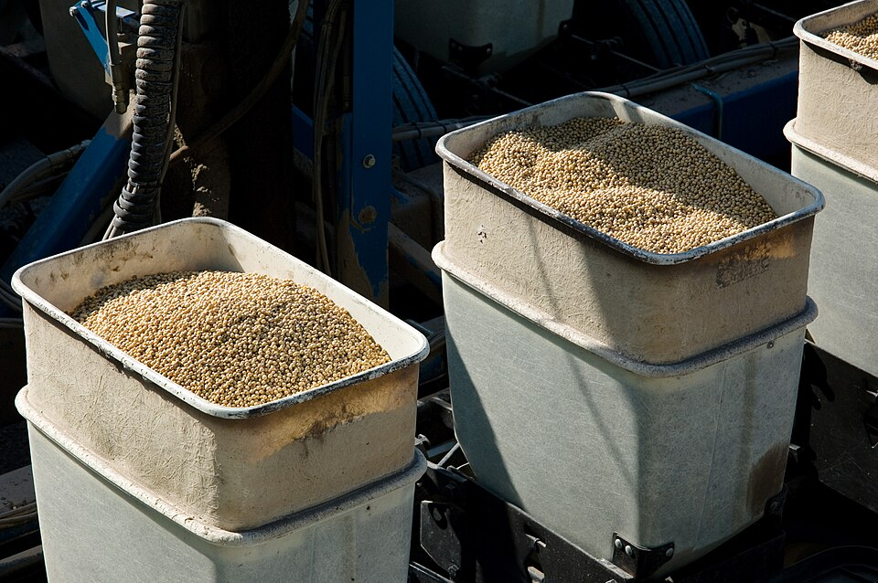
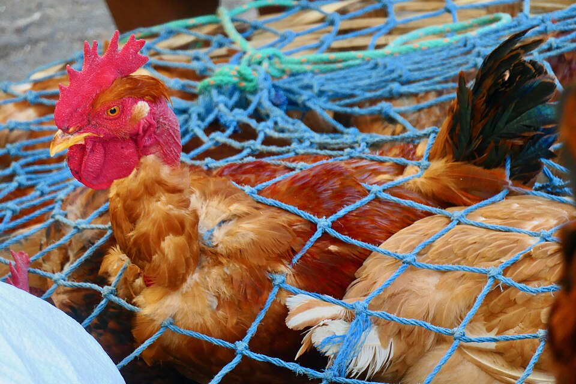
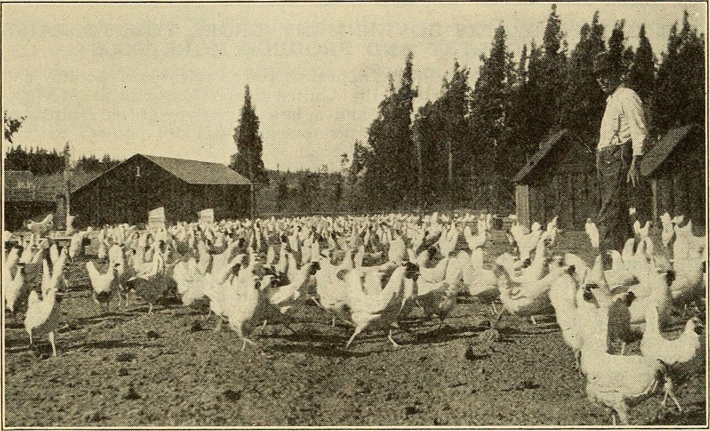

Huevo mediano
Caja de 360 · +20.89% frente a 2025
- Q392.06 2022
- Q449.50 2023
- Q377.59 2024
- Q324.26 2025
- Q392.00 2026

Edición 2026-W45 · 4 de noviembre de 2026
01 / PreciosPrecio de referencia mayorista · La Terminal, Ciudad de Guatemala · Fuente: MAGA
Comparado con el promedio del 26 al 30 de octubre.


El huevo mediano promedió en octubre 20.89% más que hace un año, mientras el pollo entero lleva tres octubres en Q14.50 por libra. El maíz amarillo bajó la semana pasada a Q200 por quintal, aunque su promedio de octubre sigue 7.13% arriba de 2025.
Según MAGA, la oferta de huevo y pollo se mantuvo normal, y espera precios estables para la próxima semana si no cambian las condiciones de abastecimiento y demanda.
Caja de 360 · +20.89% frente a 2025
Libra · Sin cambio frente a 2025
Quintal · +7.13% frente a 2025
Promedio de octubre en La Terminal, según el informe semanal de MAGA del 26 al 30 de octubre de 2026.
† Cálculo de Chiik News con datos de MAGA. Fuentes: Precios diarios · Informe semanal del 26 al 30 de octubre · Informe mensual de septiembre

La ciencia, aterrizada al galpón.
Mercado de Chichicastenango, Guatemala, 2020.

Investigadores compararon soya integral de Canadá, procesada de forma controlada, con tres muestras comerciales de Kenia cuyo procesamiento se desconocía. Las muestras no se comportaron igual en una digestión simulada en laboratorio. Una de las de Kenia no se diferenció de la soya cruda en digestibilidad promedio de aminoácidos.
El dato importa porque la soya es de los ingredientes caros de la ración: esta semana, la amarilla de primera está en Q800 por quintal en La Terminal. Los autores concluyen que conviene evaluar la calidad de la soya integral comercial antes de formular el alimento. Si compras soya integral, pregúntale a tu proveedor cómo fue procesada y qué análisis tiene ese lote.
Estudio de laboratorio con predicción · Soya para pollo de engorde · Canadá y Kenia. No probado en Guatemala ni medido en granja.
Foto ilustrativa: semilla de soya en una sembradora.
Proveedor y lote de cada compra de soya o alimento, junto con la conversión alimenticia del lote de aves que lo consumió. Así podrás ver si un cambio de materia prima coincide con un cambio en tu conversión.
Se evaluaron composición química, estructura secundaria de proteína por ATR-FTIR, solubilización de proteína cruda y digestibilidad in vitro de aminoácidos. La actividad de inhibidores de tripsina bajó de 17.42 TIU/mg en la soya cruda canadiense a 3.85 TIU/mg en la extruida y a 4.77, 4.59 y 2.30 TIU/mg en las tostadas a 136.7, 151.7 y 154.4 °C. Las muestras de Kenia tuvieron 8.00, 6.00 y 12.00 TIU/mg. El tostado a 151.7-154.4 °C dio las mejores respuestas de estructura y digestibilidad.
Limitaciones: Los valores de digestibilidad ileal son predichos, y el modelo tuvo errores mayores en lisina, ácido aspártico y prolina. El estudio declara financiamiento público y de la industria de alimentos.
Fuente Njeri FM, Ciola AL, Manoa LA, et al. Full-fat soybean origin and thermal processing affect protein secondary structure, in vitro digestion kinetics, and predicted standardized ileal amino acid digestibility in broiler chickens. Journal of Animal Science and Biotechnology, 2026. PMC13726081. Ver artículo

Investigadores de universidades de Irán criaron pollos de engorde a 2,100 metros de altura y bajo estrés por calor crónico durante 42 días. Sus autores llaman a esa combinación una "doble carga": el calor aumenta la necesidad de oxígeno mientras la altura limita el suministro, lo que predispone a las aves a hipertensión pulmonar y ascitis.
La mortalidad apareció a partir del día 28, con signos compatibles con estrés por calor y ascitis. Se probó además un extracto de Echinacea purpurea en el alimento: mejoró marcadores de estrés oxidativo en sangre y la mortalidad fue numéricamente menor (8% sin extracto, 5% y 3% con extracto). Eso no demuestra que el extracto convenga en una granja: el estudio fue pequeño y se concentró en marcadores biológicos. Antes de cambiar la ración, habla con tu veterinario.
Lo aprovechable desde hoy es otra cosa: si tu granja está en una zona alta, no basta con vigilar el calor por sí solo, y la cuarta semana merece atención especial.
Ensayo controlado pequeño (108 pollos) · Pollo de engorde Ross 308 macho · Irán. No probado en Guatemala.
Foto ilustrativa: nave de engorde en Estados Unidos.
Temperatura y humedad de cada nave, y mortalidad diaria con los signos observados, sobre todo desde el día 28.
El extracto redujo óxido nítrico y malondialdehído en suero en ambos niveles (p < 0.05). En el nivel alto aumentó la expresión de IL-10 (900%) e IFN-γ (351%), sin cambios en IL-1β ni TNF-α. La longitud relativa de telómeros en hígado no cambió.
Limitaciones: Tamaño de muestra reducido; los autores no identificaron los compuestos fenólicos individuales del extracto ni los cuantificaron en el alimento; describen la diferencia de mortalidad solo como numérica. Las dosis del ensayo se omiten aquí a propósito y pueden consultarse en el artículo.
Fuente Bahadoran S, Vaeznia S, Hassanpour H. Dietary Echinacea purpurea Attenuates Oxidative Stress and Alters Cytokine Gene Expression Among Heat-Stressed Broiler Chickens at High Altitude. Veterinary Medicine and Science, 2026. PMC13620839. Ver artículo

Entre junio y agosto de 2022, investigadores tomaron muestras en tres mercados: Ciudad de Guatemala, Santa Catarina Pinula y San Martín Jilotepeque. Buscaron Escherichia coli resistente a cefalosporinas de tercera generación, un grupo de antibióticos importante en salud humana.
La encontraron en 18 de 20 canales de pollo no comercial (90%) y en 9 de 20 de pollo comercial (45%). También apareció, en menor proporción, en muestras humanas, de agua y de vegetales.
Esto no significa que la bacteria venga de tu granja. Son muestras de canales ya en el mercado, de pocos sitios, y este tipo de estudio no permite saber en qué punto de la cadena se originó la resistencia. Pero sí muestra que el tema ya está presente aquí. Usar antibióticos solo con indicación del veterinario, y guardar registro, te permite responder con datos cuando alguien pregunte.
Estudio transversal · Canales de pollo, vegetales, agua y muestras humanas · Guatemala. Datos de 2022.
Aves en el mercado de Chichicastenango, 2020. La foto no forma parte del estudio.
Cada tratamiento con antibiótico: producto, lote, fecha, nave, quién lo indicó y tiempo de retiro.
De 132 muestras, 43 (32.6%) fueron positivas a 3GCR-EC. Se secuenciaron 40 aislados tras retirar duplicados. Entre 11 genes de betalactamasas de espectro extendido, el más frecuente fue blaCTX-M-55, con 32 tipos de secuencia distintos, incluidos los linajes pandémicos ST10, ST648 y ST410.
Nota de verificación: el resumen del artículo indica 67.4% de positivos, pero la tabla de resultados muestra 32.6% de positivos y 67.4% de negativos. Aquí se usa la tabla.
Limitaciones: Tres mercados no representativos del país; clasificación comercial o no comercial basada en la marca y en lo que dijeron los vendedores; sin pruebas completas de susceptibilidad; la presencia de un gen no implica expresión.
Fuente Perez-Garcia G, Alvarez D, Barillas AG, et al. Diverse Reservoirs of Third-Generation Cephalosporin-Resistant Escherichia coli in Guatemala. EcoHealth, 2026. PMC13287249. Ver artículo

Granja avícola en el libro Dollars and sense in the poultry business, 1921.
La enfermedad que hoy llamamos pullorum, entonces conocida como diarrea blanca bacilar, podía causar mortalidades de 80% o más en aves jóvenes. Un coordinador del programa estadounidense NPIP la describe como probablemente el mayor factor que limitó la expansión temprana de la avicultura.
La bacteria se identificó en 1899 y la prueba de sangre llegó en 1913. Como la enfermedad pasa de la gallina al pollito por el huevo, algunos avicultores empezaron a probar a sus aves y a sacar a las positivas de las reproductoras. A inicios de los años veinte, varios estados de Estados Unidos ya tenían programas de prueba, y pronto aparecieron las primeras parvadas identificadas como libres. Los investigadores seguían buscando más respuestas: en 1926, el Journal of Bacteriology publicó un artículo de Norman Pyle sobre el bacteriófago en esta infección.
Esa estrategia se parece a algo muy actual: no basta con tratar el problema en el galpón, hay que saber de dónde viene cada lote. En esa misma época, los nidos trampa permitían llevar la cuenta por ave para identificar las mejores. La conexión con hoy es nuestra interpretación: hace cien años, ya ganaba ventaja quien medía y registraba.